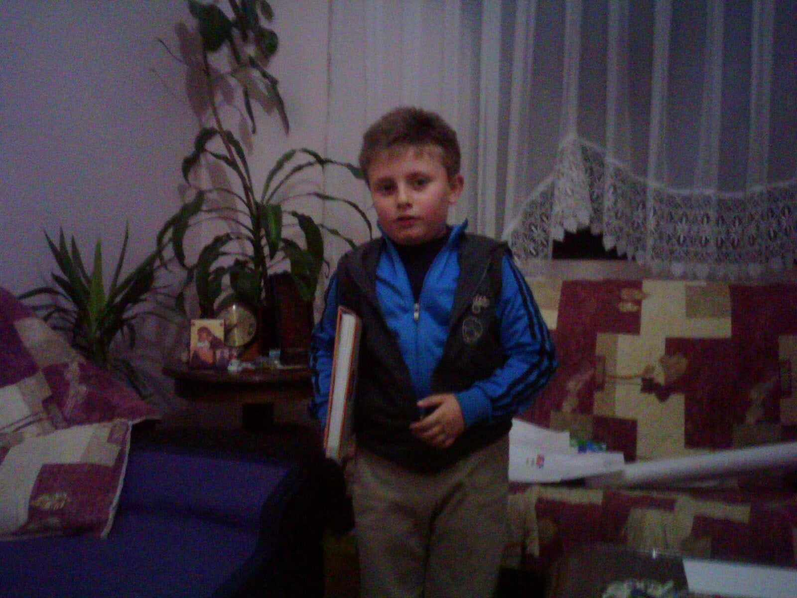

Хобија и интереси

Една од моите омилени енциклопедии
За моите хобија и интереси има многу да се зборува, па затоа ќе почнам хронолошки. Прво нешто што ми беше од интерес беа книгите. Кога почнав да читам книги и енциклопедии, најмногу ме интересираше астрономијата, па затоа ги имав и ден-денеска ги имам сите книги на таа тематика. Важно е да се напомене дека ниедна од тие книги не е помала од 200 страници А4 формат и затоа ми беше тешко да ги пренесувам тие книги од полицата до местото каде што читав. Со текот на времето сферата на интерес ми се прошири, па денеска имам книги и енциклопедии на речиси секоја замислива тема, од архитектура до микробиологија и анатомија.
Покрај читање, голема љубов ми беше и пишувањето. Најмногу сакав да пишувам поезија, најчесто сатирична поезија со која исмевав буквално се што ми пречеше. Понекогаш ми доаѓа инспирација за по некоја строфа, без разлика дали е сатирична или сериозна, па неретко ја компонирам во некоја песна на гитара, па ако чини ја забележувам, а ако не заборавам на неа. Повеќе за ова можете да прочитате подолу.
Подготовки за еден од тениските турнири
Како што кажав во делот „За мене“ моите родители беа загрижени дека моето прекумерно читање може да ми предизвика проблеми со физичкиот раст, па затоа ми предложија да се занимавам со спорт. Така, на возраст од 7 години одбрав да тренирам тенис. Тенисот ми беше интересен од многу причини. Има трчање, техника, координација, концентрација, се игра надвор и најважно иако е индивидуален спорт, има многу дружење. Тренирав во тенискиот клуб „Љуботен“ скоро 3 години и притоа научив многу за спортот. Во 2012 година на турнирот Тетово Опен освоив второ место и уште го чувам рекетот со кој ја освоив оваа награда. За жал после ова, школата прекина со работа и затоа бев принуден да прекинам со тренинзи, но се одржував во форма така што вежбав „играње со ѕид“. Би сакал пак да се вратам на терен, барем за една игра.
Денот кога станав мајстор со црн појас, први дан
Во исто време додека тренирав тенис, почнав да тренирам и карате. Иако тренирав тенис, сеуште ми беше страв од паѓање и повреди па затоа бев екстремно претпазлив. Заради ова моите родители ме запишаа во еден нов клуб, карате клуб „Шарпланинец“ каде што јас и мои врсници работевме првенствено на физичкиот развој, а потоа и на каратето преку вежби кои се дизајнирани да не опуштат и да ја уништат таа претпазливост. После првиот тренинг, тренерот му ја кажа на татко ми таа чуена реченица:„Можеби Петар сега не знае ни да трча, ама ќе видиш што ќе биде од него.“. Една година после тоа, полагав за жолт појас, првото полагање за појас во карате. Тоа ми даде желба да полагам се додека има полагања и да стигнам до црн појас, а сите знаеме дека не постои нешто посилно од дете што има сон и го остварува. Заради тоа што брзо ги усвојував елементите, тренерот редовно ме замолуваше да менторирам, а со тоа и да ги усвојувам основите на водењето еден тренинг. После сите успешни полагања, во декември 2019 дојде денот да положам за црн појас. Подготовките беа и физички и психички тешки, а полагањето возбудливо и неизвесно. Веднаш ми беше доделен црниот појас, а тренерот на моите родители им рече:„Нели тогаш ви реков, ете ви“, но после тоа започна една подолга пауза поради корона-кризата и немав прилика да тренирам. Во 2022 се вратив, но овој пат како втор тренер во клубот и тврдам дека тоа ми е една од најдобрите одлуки во животот. Преубаво е чувството кога ги гледам своите ученици како успешно ги усвојуваат сите техники и елементи кои им ги кажувам, а потоа тие им се наоѓаат од полза. Преубаво е и чувството да ги гледаш тие ученици како напредуваат и се развиваат како личности. А најубаво е чувството кога тие успешно ќе положат за појас и ќе се издигнат едно ниво погоре. Денеска сум каратист со неколку награди зад себе и со титула мајстор со црн појас - втори дан.

Славење после еден од натпреварите по кошарка
Можеби ќе звучи претерано, но додека тренирав карате (тогаш имавме само по два тренинзи неделно) почувствував дека можеби треба да пробам и некој тимски спорт. За среќа, мојот прв сосед е еден од најдобрите тренери за кошарка, па така почнав да тренирам кошарка во неговиот клуб, КК „Томас“. Кошарката ми отвори една нова перспектива на гледање на работите. Кошарката иако е доста различен спорт од каратето, има доста сличности кои ми помогнаа да напредувам во двата спорта. Бидејќи тренерот е професор по Спорт, никогаш во фокус на тренинзите не беше чисто само кошарка, туку секогаш имаше и други елементи. Ова придонесе да бидеме најдобрата кошаркарска екипа во Тетово и пошироко. Без разлика против која екипа и да игравме секогаш победувавме со 40/50 поени разлика. Заради тоа, неколку пати ми беше доделена награда за MVP што за мене беше преголема чест. За жал, неколку локални клубови се организираа и со измами успеаа да земат неколку членови кои на неприфатлив начин заминаа од клубот. Ова не влијаеше на нашиот успех, бидејќи продолживме да победуваме. Покрај се, летото 2021 година се одржа последниот тренинг на КК „Томас“ по што постоеја неколку обиди за обновување на клубот кои се покажаа како безуспешни. Тоа е еден неприфатлив и несоодветен крај за најдобриот и најпознатиот кошаркарски клуб во историјата на Тетово. Сепак, драго ми е што бев дел од тоа огромно семејство и имав чест да придонесам за многуте победи на овој клуб.
Макета на носач на авиони изработена со 3д сложувалки
Покрај спортот, имав време и за уште едно мое хоби кое беше интересно и многу ме усреќуваше. Тоа е моделарството. Се започна кога на интернет наидов на поимот оригами и тоа ми беше многу интересно. Со правилно превиткување парчиња хартија може да се креира еден цел свет. Тој што добро ме познава, знае дека имам склоност на секој свој интерес да се посветувам максимално, па затоа ова брзо стана закана по количините на хартија во канцеларијата на татко ми. За среќа, наидов на компромис, а тоа беше печатење на шаблони и изработка на 3Д макети според тие шаблони. Имав изработено макети од авиони, ракети, објекти и многу други работи. Една од најинтересните за изработка ми беше макетата на Сатурн 5, ракетата со која човекот стапна на Месечината. Ја изработував детално и во многу делови за што ми требаа скоро две недели. Кога го залепив и последниот дел, на мојата среќа немаше крај и таа макета ја носев буквално сегде со себе. Исто така изработив и макета на пошироката област околу Светскиот Трговски Центар во Њу Јорк која имаше преку 60 блокови (инфраструктурната мрежа на Њу Јорк се состои од блокови кои имаат слична големина и имат по неколку помали згради (15-30 ката), Светскиот трговски центар е еден огромен блок кој се состои од 5 облакодери, секој од нив повисок од 250 метри, највисокиот 541 метар и неколку пропратни објекти). Макетата ја изработував етапно во период од 2 месеци. На крајот добив макета со која конечно бев задоволен и среќен. И оваа макета ја имаше истата судбина како ракетата. За жал денеска овие макети не се во првобитна состојба бидејќи беа печатени на обична хартија чија цврстина во моментов не е доволна за да ги одржува макетите. Исто така, изработував и макети од 3Д сложувалки кои се доста поедноставни за изработка од претходните бидејќи не епотребно деловите да се лепат. Имав изработено многу макети кои уште ги чувам, како на пример: Кинескиот Ѕид, Таџ Махал, Кривата кула во Пиза, Парламентот во Будимпешта, Биг Бен, Статуата на Слободата, Ајфеловата Кула, но најинтересна за склопување ми беше макетата на замокот Нојшванштајн во Баварија. Ја изработував 5 часа, а крајот беше толку импресивен што дури и мене ме зачуди. Во тој период исто така ме интересираа и струјни кола и слично, па затоа изработував секакви направи. Најинтересен ми беше прототипот за климатизирана летна капа која како вентилатор внатре би имал кулер од компјутер (можете да замислите зошто оваа идеја не е изработена). Едно реално нешто што изработив беше ховеркрафт со електричен мотор (пластична чинија обвиткана со најлонска фолија и со кулер кој служеше како мотор). Беше напојуван на батерии (електрично возило) и без проблем можеше да вози преку една голема трпезариска маса.
Денот кога се запознав со Зеле Липовача
Уште едно мое хоби е музиката. Како што рече Френк Запа: „Без музика да го украси, времето е една здодевна сума на крајни рокови“. Иако од мал растев со музика (и ден-денеска не можам да заспијам доколку нема пуштено тивка музика), мојот прв посериозен контакт дојде кога наставникот по музичко во основно ме повика да пејам во училишниот хор. Иако тогаш и не бев некој пејач, со хор тоа и звучеше некако добро. Во тоа време почнав да свирам и на синтисајзер, претежно песните кои ги пеевме во хорот. Пробав да се запишам и во музичко, но бев вратен бидејќи сум бил над дозволената возраст и не би можел да научам да свирам. Ова не ме разочара, туку ми даде нов жар. На тоа не можеш, јас велев: „Е можам!“. Така, кога завршив 9-то одделение на предлог на мајка ми почнав да одам на часови по гитара кај еден од најдобрите гитаристи од Тетово, гитаристот на групата „Легенда“. На првиот час во мене нешто кликна и од тогаш немам поминато ден без гитара во рака. Биедјќи ми беше интересно, немаше сила што можеше да ме оттргне од гитарата. Додека да напреднам, свирев на гитара која ми беше дадена на заем од професорот. Барем во моите очи, гитарата изгледаше стара и вредна. Иако ми беше дадена на заем, со дозвола од професорот сменив многу работи на неа со што свирењето драстично се подобри. Кога стигнав до одредено ниво, моите родители како подарок ми ја купија првата сопствена гитара. Тоа е класична гитара со најлонски жици кои се лесни за свирење и даваат топол и продорен звук. Логично е дека ова во мене ја зголеми веќе преголемата љубов за рок музиката за која ќе зборувам подолу, па така оваа гитара наменета за класичната музика на Бетовен, Моцарт и Бах претрпе на неа да бидат свирени некои од најжестоките хитови на рок и метал музиката. Затоа на мајтап велам дека мојата акустична гитара има свирено работи од кои многу електрични гитари се плашат. Нормално, после тоа ми купија и електрична гитара и засилувач за неа. Електричната гитара е модел „Стратокастер“, еден од најпознатите модели на гитара на светот користен од гитаристи како: Џими Хендрикс, Ерик Клептон, Ричи Блекмур, Дејвид Гилмор, Еди Ван Хејлен, Стиви Реј Ван и многу други, а засилувачот ми е од марка ЕВХ (Еди Ван Хејлен). Одлуката за марката на засилувачот ми беше емотивно донесена, бидејќи само неколку месеци претходно почина неговиот дизајнер, гитаристот Еди Ван Хејлен. Секој пат кога свирам, од засилувачот излегува тон кој е потполно идентичен како неговиот тон на некои од најпознатите негови хитови. 1-2 години подоцна, стекнав доволно знаење за инструментот така што моите концерти во гимназијата беа очекуван настан, а моите трикови на гитара причина за чудење и аплауз. Минатото лето, почнав да свирам и на усна хармоника бидејќи ми беше интересно и конечно ми даде прилика да научам некои блуз песни за кои е неопходна усната хармоника. Моите познавања на гитарата ми овозможија да се запознаам и да разменам мислења со Влатко Стефановски и Зеле Липовача, двајца најдобри гитаристи во источна Европа. Немав прилика, но голема желба ми е да засвирам барем со еден од нив двајца.
Персонализирана посвета за мене во мојата омилена биографија за една рок група
Аналогно на претходното, уште еден мој интерес е рок музиката, конкретно собирањето албуми, снимки од концерти и слични работи. Не е тешко да се види од каде ја имам љубовта према рок музиката. Со секоја научена песна на гитара, од истата група слушав уште многу повеќе песни со цел да слушнам некои карактеристики и особености на гитаристот кои ќе ми помогнат во мојот процес на учење. Заради ова, имам обичај да ја преслушам целата дискографија на една група пред да донесам одлука за тоа дали ми се допаѓа ниваната музика или не. Со овој метод открив дека најдобри групи на овие простори се Дивље Јагоде, Рибља Чорба и Смак. Тоа се групи кои свират на светско ниво и кои се познати далеку од границите на Балканот. Затоа еднакво ги почитувам и светските и балканските рок бендови и имам плејлисти со над илјада песни од двата типа, како и комплетни дискографии од преку 30 групи и изведувачи без разлика дали се светски или балкански (имам и диск со огромен простор :) ). Исто така, колекционер сум на концертни и демо снимки на овие групи и со радост можам да кажам дека поседувам снимки за кои не сум ни сонувал дека постојат а веројатно ни членовите на тие групи не се свесни за нивното постоење. Некои од најинтересните снимки во мојата колекција се: првиот снимен концерт на Рибља Чорба, концерт на Дивље Јагоде на BBC радио, демо снимки на групата Лед Цепелин од сите нејзини периоди, необјавени и непознати песни на Аеросмит, најпосетениот концерт на Металика со преку 1,5 милиони луѓе во публика, колекција на најдобрите концерти на MTV Unplugged (Нирвана, Ерик Клептон, Кис, Скорпионс, Џими Пејџ и Роберт Плант...) како и многу други концерти и демо снимки. Вкупно, во мојата архива постојат преку илјада такви снимки, но колекцијата секојдневно расте, така да оваа бројка е подложна на менување. Мене ми се интересни за слушање бидејќи тие снимки се поспонтани, понепосредни и поискрени од еден нормален албум. Интересно е да се види како една песна се развива. Но исто така, се она што ќе се сними во студио е апсолутно ирелевантно ако не може соодветно да се презентира во живо. Некои од овие снимки ги снимам и сам, најчесто преку радио. Меѓу најдрагите од сите овие снимки ми се снимките на првите концерти на светските групи во Јапонија. Јапонската публика е позната по тоа што е целосно тивка за време на изведување на песните што претставува знак на почит. За луѓето кои во тој период имале квалитетна опрема за снимање и аматерски снимале снимки од публика тоа е благослов бидејќи квалитетот на сниениот концерт е на ниво на професионална снимка и ден денеска звучи свежо. Конкретно, најомилени од овие снимки ми се снимките од првата јапонска турнеја на групата Аеросмит. Покрај снимки од публика од сите нивни концерти на оваа турнеја, имам и една снимка снимена професионално која била наменета за радио-пренос, но од непознати причини останува необјавена до 2008 година кога е објавена на цеде со тираж од 200 примероци. Оваа снимка е важна, бидејќи никој во групата не бил свесен дека тој концерт се снима професионално.
Имам и една мала колекција на цедиња од некои од балканските рок групи која планирам да ја проширам. Сепак, најдраги предмети кои ги имам во мојата колекција се биографската книга за групата Дивље Јагоде во која лична посвета ми напишаа основачите на групата, Зеле Липовача и Тони Јанковиќ кои и ден денеска ја водат групата, како и две перца за гитара со дизајн на јагода кои Зеле ги користи на концерт и ги добив како специјален подарок од него за мотивација да продолжам со свирење гитара. Таа мотивација функционираше перфектно.